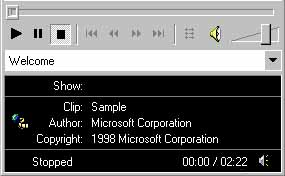

|
| ||
|
| ||
May 22, 1998
Streaming media users need to know how to troubleshoot problems and learn how to use the Windows Media Player to its fullest. Here are some resources to allow them to do just that:
 Windows Media Player can be installed from the Windows Media Player Web site
Windows Media Player can be installed from the Windows Media Player Web site  .
.
 Installation of the player is simple. Troubleshooting tips are available.
Installation of the player is simple. Troubleshooting tips are available.
 Here's a rundown of the controls available on the Windows Media Player:
Here's a rundown of the controls available on the Windows Media Player:
| Button | Description |
|---|---|
| If a stream does not start automatically, press the Play button to begin the stream. | |
| Press the Pause button to pause a stream. You cannot pause a live stream. | |
| Press the Stop button to stop the stream. | |
| Use the Fast-Forward and Rewind buttons to skip ahead in a stream that is being served from a Windows Media Services server. | |
| Use the Volume slider to increase or decrease the level of the audio. Click the Speaker button to mute the audio. |
 Markers make navigation easier.
Markers make navigation easier.

Did you find this material useful? Gripes? Compliments? Suggestions for other articles? Write us!
© 1999 Microsoft Corporation. All rights reserved. Terms of use.